Transform wild seedlings into high-yielding, disease-resistant orchard clones. Explore step-by-step techniques, rootstock compatibility rules, and interactive seasonal calendars.
Everything you need to succeed in field grafting and commercial nursery operations.
Bypass unpredictable seed traits. Grafting scions from elite mother trees guarantees sweet, fiberless, high-market-value fruit every season.
Pair delicate high-flavor scions with hardy, nematode-resistant and Phytophthora-immune rootstock bases for maximum tree longevity.
Never waste cuts out of season. Our calendar guides match your local weather and cambium state (Dormant vs. Slipping Bark) to the ideal cut.
Expand your agricultural expertise through our partner training hubs offering certified online courses and technical manuals.
Access accredited online courses, agricultural modules, and professional skill enhancement programs.
Learn through practical field manuals, restoration guides, and interactive ecosystem intelligence tools.
Empowering farmers, horticulturists, and gardeners with sustainable plant propagation tools.
Grafting Solutions is a modern educational Progressive Web App (PWA) designed to simplify plant propagation for commercial growers and home gardeners alike. Our goal is to promote high-yielding, disease-resistant fruit production through step-by-step guides, interactive tools, and offline accessibility.
Detailed rootstock selection, scion harvesting, and cutting instructions tailored to each individual fruit species.
Instant rootstock–scion compatibility checks to avoid interspecies graft failures before taking a knife to your trees.
Install directly to your smartphone home screen and access full nursery guides even in remote farming fields without internet.
Have questions or feature suggestions? Send a direct message to Grafting Solutions.
Learn why we graft, the essential step-by-step principles, and explore detailed crop propagation guides for 10 fruit varieties.
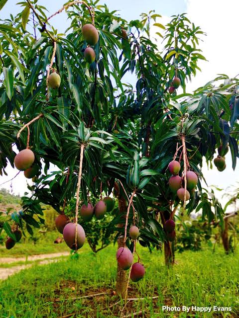
Method: Side-Veneer / Cleft
Why: Ensures high yield & early fruit maturity (2-3 yrs vs 8+ yrs seed).
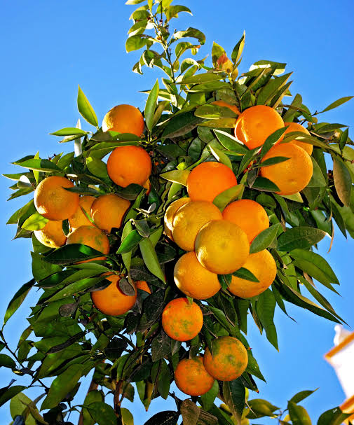
Method: T-Budding / Chip Budding
Why: Imparts root-rot resistance and sweet fruit consistency on Trifoliate stock.
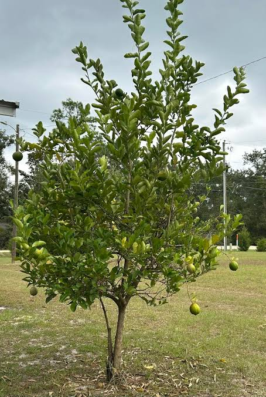
Method: T-Budding / Cleft
Why: Protects roots from Phytophthora fungal infections in wet soils.
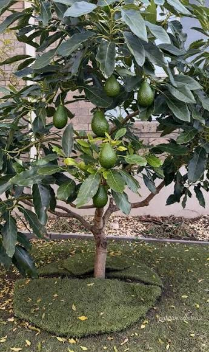
Method: Cleft / Side-Tongue
Why: Clones commercial Hass scions onto disease-tolerant root bases.
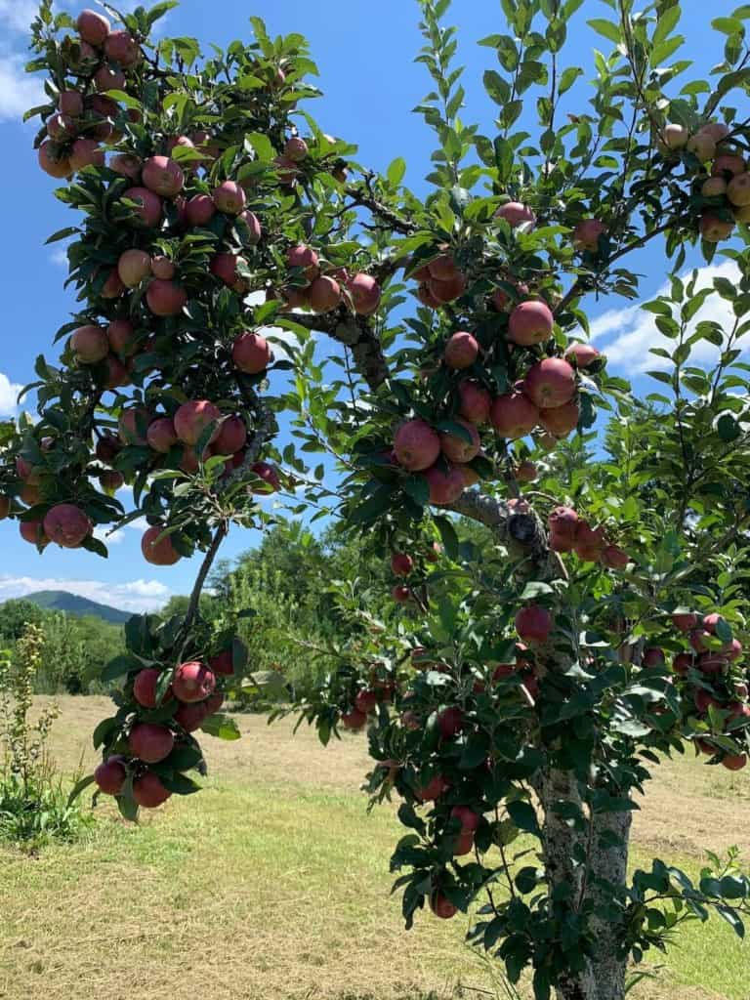
Method: Whip & Tongue
Why: Controls tree height on dwarfing M9/M26 rootstocks during dormancy.
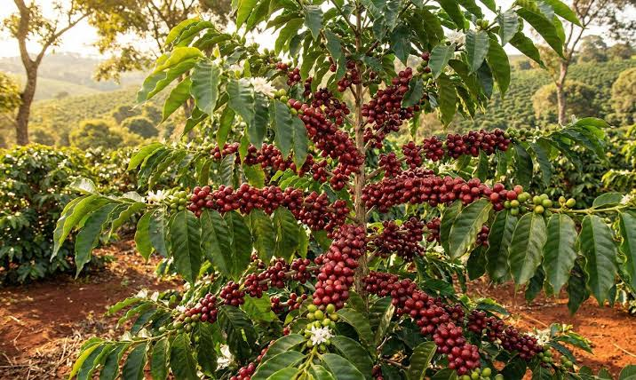
Method: Hypocotyl Cleft
Why: Fuses high-flavor Arabica scions with nematode-resistant Robusta roots.
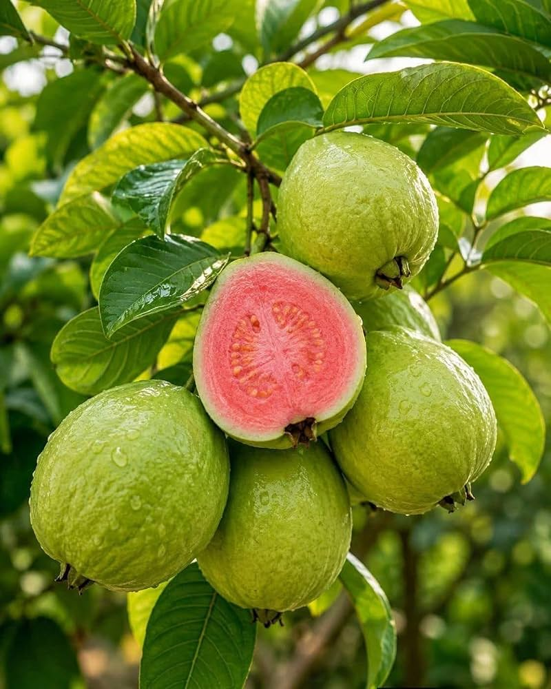
Method: Patch Budding / Cleft
Why: Overcomes wilt disease and propagates seedless cultivars true-to-type.
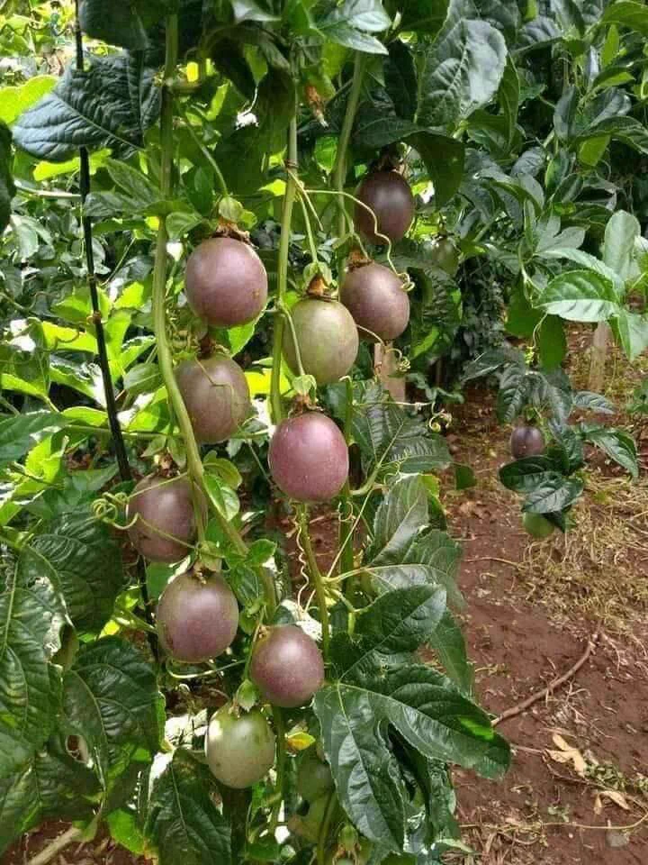
Method: Splice / Cleft
Why: Joins purple sweet scions onto yellow Fusarium-wilt-resistant root bases.
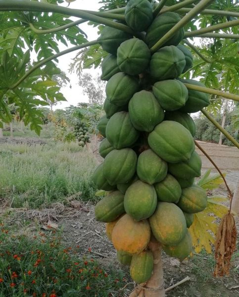
Method: Side Veneer / Cleft
Why: Guarantees 100% hermaphrodite fruit-bearing trees without non-bearing males.
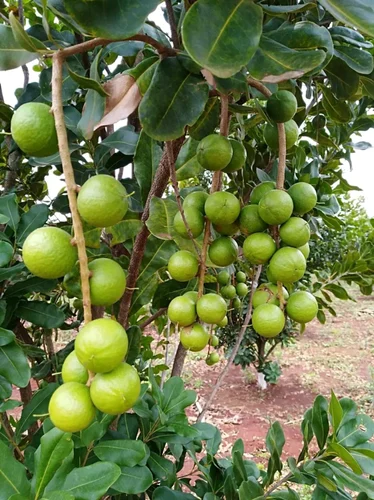
Method: Bark Graft / Whip & Tongue
Why: Propagates high-oil commercial nut cultivars onto robust taproot seedling bases.
Explore techniques, find the right method for your branch size, and inspect required field equipment.
Select your stem diameter and season to discover the optimal technique instantly:
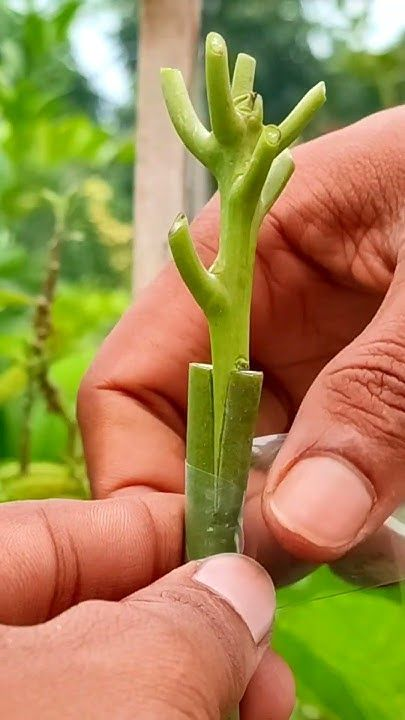
Level: Beginner | Season: Dormant
Best for top-working older trees or rootstocks during late winter.
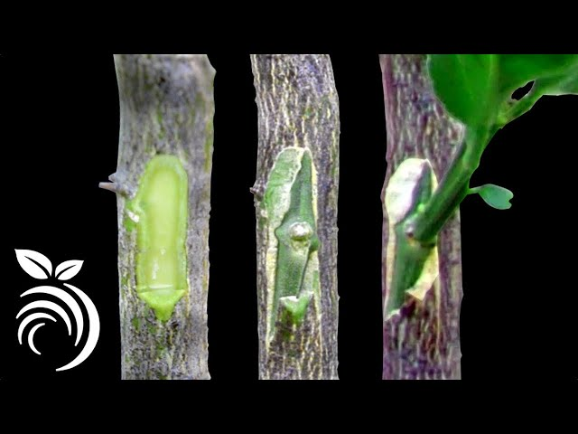
Level: Intermediate | Season: Active Growth
Widely used for citrus and stone fruits when bark slips smoothly.
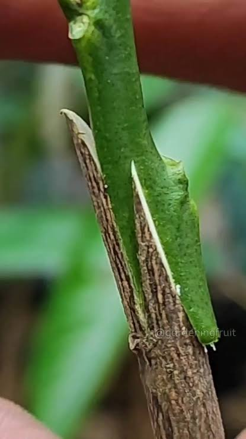
Level: Intermediate | Season: Dormant
Provides maximum cambium contact for thin stems of equal thickness.
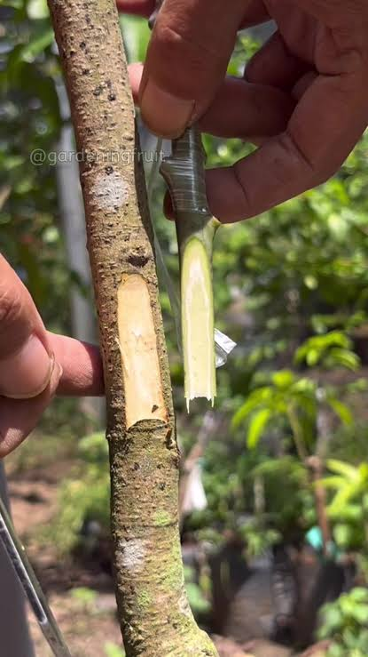
Level: Advanced | Season: Active Growth
Perfect for difficult tropicals like Mango and Avocado.
High graft success rates demand precise surgical cuts and sterile tools. Check off each item below as you prepare your propagation kit before stepping into the orchard.
Single-bevel or carbon steel blades allow flat, smooth cuts without crushing wood fibers or tearing delicate cambium cells. Ensure blades are razor-honed prior to use.
Breathable, moisture-proof film that expands as buds swell. Seals the graft union to prevent moisture evaporation while keeping rain water and bacterial rot out.
70%+ Isopropyl alcohol or disinfectant wipes. Sterilize knife blades between cuts to prevent transferring viral or fungal diseases across different parent trees.
Coats thick cut ends during top-working or cleft grafting on heavy stumps, locking in moisture and preventing fungal decay from entering open cut surfaces.
Creates a mini micro-climate humidity tent over young scions (especially tropical varieties like Mango and Avocado) during the critical first 3 weeks of vascular healing.
Track scion variety cultivars, rootstock type, and exact grafting date. Proper labeling avoids cultivar mix-ups when managing commercial nursery stock.
Check rootstock affinity, learn botanical compatibility rules, and master seasonal timing before taking cuts.
Why can you graft an Orange onto a Lemon tree, but never an Apple onto a Mango tree? Grafting success follows strict genetic taxonomy.
100% Success Rate. Grafting one variety onto another variety within the same species (e.g., Hass Avocado onto Fuerte Avocado seedling). Cell alignment and vascular healing occur seamlessly.
High Success Rate. Plants within the same genus can usually be grafted together. All Citrus (Orange, Lemon, Lime, Grapefruit) can be grafted onto one another. Most stone fruits (Prunus) like Peach, Plum, and Nectarine can share rootstocks.
Variable / Requires Interstems. Rare cases work (e.g., Pear [Pyrus] on Quince [Cydonia] rootstock for dwarfing). However, some pears trigger "delayed incompatibility" and break years later unless an intermediate stem piece (interstem) is inserted between them.
0% Success Rate (Impossible). Plants from different botanical families (e.g., Mango [Anacardiaceae] and Apple [Rosaceae]) cannot fuse. Their cambium tissues reject each other and the scion dies within days.
Plant Status: Sap is stationary. Tree leaves have dropped (deciduous) or energy is stored in stems. Bark is tight against the wood.
Best Methods: Whip & Tongue, Cleft Grafting, Bench Grafting.
Why: Scions stored in cold storage stay dormant while cut wood surfaces form initial callus tissue in early spring warmth.
Plant Status: Roots absorb moisture and pump sap upward. Buds swell rapidly. Cambium cells divide heavily.
Best Methods: Bark Grafting, Cleft Grafting, Side-Veneer.
Why: Ideal for top-working mature stumps or framework branches as the tree enters full vegetative growth.
Plant Status: Active cambial division creates a soft liquid layer between outer bark and inner wood ("bark slips").
Best Methods: T-Budding, Chip Budding, Patch Budding.
Why: Single buds take rapidly without damaging scion wood supply. Perfect for Citrus, Stone Fruits, and Roses.
| Fruit Crop | Botanical Family | Compatible Rootstocks | Recommended Method | Ideal Season |
|---|---|---|---|---|
| Sweet Orange / Lemon | Rutaceae | Carrizo Citrange, Swingle, Volkameriana | T-Budding / Chip Budding | Spring – Summer |
| Mango | Anacardiaceae | Sabre, Turpentine, Gomera-1 | Side-Veneer / Epicotyl Cleft | Spring – Mid Summer |
| Apple | Rosaceae | M9 (Dwarf), MM106 (Semi-Dwarf), MM111 | Whip & Tongue / Cleft | Late Winter (Dormant) |
| Avocado | Lauraceae | Dusa, Duke 7, Mexican Seedlings | Cleft / Side-Veneer | Late Winter – Early Spring |
| Peach / Plum / Apricot | Rosaceae (Prunus) | Nemaguard, Citation, St. Julien A | T-Budding / Chip Budding | Summer (Bark Slipping) |
| Coffee | Rubiaceae | Robusta (Nemaya / Apoatã) | Hypocotyl Match Graft | Seedling Stage (3–5 Wks) |
| Guava | Myrtaceae | Psidium friedrichsthalianum (Wilt Resistant) | Patch Budding / Cleft | Late Spring – Summer |